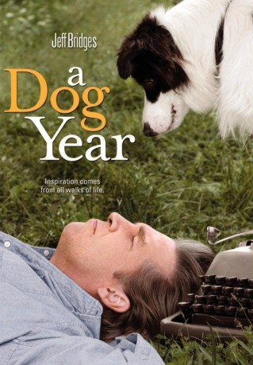

#7714 A Dog Year
 
 IMDB-Wertung: 6.1 / 10
IMDB-Wertung: 6.1 / 10  Metascore: 0
Metascore: 0 
Der eigenbrötlerische, von seiner Frau verlassene Schriftsteller Jon Katz (Jeff Bridges) hat mit seiner Midlife-Krise zu kämpfen. Da lässt er sich von einer Züchterin überreden, einen misshandelten Collie aufzunehmen. Bald merkt Jon, dass der Hund noch verrückter als er selbst ist.
Jahr: 2009
Dauer: 75 Minuten
FSK:
Land: USA Studio: HBOTonspuren: DD2.0 - ,
Untertitel:
Auflösung: 1080p (1920x1080) Größe: 4075 MB
Genre: Drama, Komödie
Regisseur: George LaVoo
Drehbuch: George LaVoo
Soundtrack: Joseph Vitarelli
Darsteller:
 Jeff Bridges als Jon Katz
Jeff Bridges als Jon Katz Lauren Ambrose als Emma
Lauren Ambrose als Emma Lois Smith als Lois Blair
Lois Smith als Lois Blair Domhnall Gleeson als Anthony Armstrong
Domhnall Gleeson als Anthony Armstrong Welker White als Brenda King
Welker White als Brenda King Elizabeth Marvel als Margo
Elizabeth Marvel als Margo Pamela Stewart als Patti
Pamela Stewart als Patti Deirdre O'Connell als Donna Brady
Deirdre O'Connell als Donna Brady Karen Allen als Paula
Karen Allen als Paula- Leo Trombetta als Richard
 Patricia Lentz als Holly
Patricia Lentz als Holly Teresa Yenque als Airport Bystander
Teresa Yenque als Airport Bystander- Glenn Kessler als Airport Police
- Joe Wachowski als Airport Police
- Kevin Rogers als Station Wagon Driver
 Ptolemy Slocum als Larry - Suburban Man #2
Ptolemy Slocum als Larry - Suburban Man #2 Amelia Campbell als Sandra Zeller
Amelia Campbell als Sandra Zeller- Malachy Cleary als Leroy
 William Hill als Ernie
William Hill als Ernie- Josh Liveright als Billy
- Lindsay Brice als Nosy Neighbor (uncredited)
 Loyd Catlett als Gary (uncredited)
Loyd Catlett als Gary (uncredited)- Mark Langston als Passenger (uncredited)
- Bernadette Quigley als Busybody Woman (uncredited)
 Myra Lucretia Taylor als Baggage Claim Girl (uncredited)
Myra Lucretia Taylor als Baggage Claim Girl (uncredited)- Ben Van Bergen als Police Officer 1 (uncredited)
- Jan Leslie Harding als Nancy Longhetti
- Manish Baliga als Airport Manager
- Michael Sackler-Berner als Station Wagon Passenger
- Don Hewitt als Bus Driver
- Michael Heintzman als Jeff Clement
- Madison Keator als Ida
- Stewart Skiff als Man in Corner Store
- Ryder als Devon
- Charlie als Stanley
- Hoover als Julius
- T. Rex als Max
- Twist als Joe
- Stephen N. Winter als Police Officer 2 (uncredited)
Datei: X:\2009(A-F)\Dog Year, A (2009, FSK, 1920x1080).mkv seit 15.12.2017
Festplatte: HD 2008(G-Z)-2009(A-F)
 Es gibt insgesamt 91 Filme in der Gruppe '2009(A-F)'
Es gibt insgesamt 91 Filme in der Gruppe '2009(A-F)'